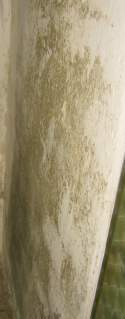

Inhaltsverzeichnis:
Inhaltsverzeichnis:Hier geht es zunächst wieder um Kondensat auf kühlen Bauteilen. Da Kellerwände oder unbeheizte Flure gerade gegenüber der feuchtwarmen Sommerluft besonders kühl sind, nehmen sie bei sommerlicher Lüftung geradezu extreme Kondensatmengen auf.

Zerschimmeltes Mespelbrunn-Puzzle auf kondensatbelasteter
freistehender Massivwand eines Lagerraumes. Es ist eben nicht aufsteigende
Feuchte, die in unbeheizten Räumen Schimmel und Hausschwamm heranwachsen läßt.
 +
+

So beschimmelt und feucht sehen
Wand- und Deckenflächen, Farbanstrich mit organischem Bindemittel, in ungeheizten
Räumen nach einigen Jahren aus, weil feuchtwarme Außenluft in das Bauwerk
immer einströmen kann, dort kondensiert und dann guten Nährboden für Schimmelbefall liefert.

Gibt es neben der Feuchte auch
noch Zement+Gips, bzw. C3A+CaSO4, kommt es zur Treibmineralbildung (Ettringit) mit ca. dreifacher
Volumenvergrößerung, die dann die Putzhaut (und auch Fliesen) absprengt. Zusätzlich
zum krassen Schwarzschimmelbefall.
Lüftung sollte dort also nur erfolgen, wenn die Außenluft deutlich kühler als die Oberfläche der Wände ist. Dies ist in Eingangsbereichen wie in allen ungeheizten Räumen mit Außenluftverbindung natürlich unmöglich. Hier sind feuchtestabile und gut kapillartrocknende Luftkalkputze und Kalktünchen vorteilhaft.

Die " guten" Dampfdiffusionswerte mancher Synthetikfarben sind leider ohne jeden Belang. Sie blockieren nämlich die kapillare Austrocknung der flüssig vorliegenden Bauteilfeuchte aus den Poren. Wichtig: Der Feuchtetransport in Bauteilen erfolgt 1000fach mehr flüssig als dampfförmig. Die von falscher bzw. unwissender bzw. manipulierter bzw. bestochener Bauphysik vielbeschworene Dampfdiffusion spielt also baupraktisch keine Rolle.

Unter dem Bodenbelag des luftdurchspülten Gewölbekellers
aktiver Hausschwamm. Es sieht aber zunächst nur nach Dreck oder dem
Mieter ausgelaufene Farbe aus. Einfache (und preisgünstige) Methoden
können hier Abhilfe schaffen, auch wenn mancher "Experte" erst mal
vom Hausabbruch, mindestens jedoch von Vollvergiftung schwafelt. Schwammbefallene Teile - und nur diese! - rausschneiden und ausbauen,
Konstruktion durch ergänzende Reparatur wieder in Orndung bringen, das haus trocken halten (Holzfeuchte < 15%,
Raumluftfeuchte < 65%), das sollte genügen. Dafür am besten ausreichend permanente
Frischluftzufuhr durch Fensterfugen ohne Dichtlippe und Temperierung der
Gebäudehüllfläche durch Strahlungsheizung.
Die zweite Feuchtequelle kommt aus der Baugrube. Dabei handelt es sich meist nicht um sogenannte "aufsteigende" Feuchte. Diese ist im üblichen Mauerwerk geradezu unmöglich: es gibt nämlich keinen Kapillartransport zwischen kleinporigen Mauersteinen und grobporigem Mörtel. Nachträgliche Horizontalisolierungen und Injektagen sind also nicht zielführend, sondern schädigen den Geldbeutel und das Mauerwerk.

Die besonders sommers blühende Veralgung und die abbröselnde Farbe sind keine Folge
"aufsteigender Feuchte", Teuermaßnahmen wie eine nachträgliche
Horizontalisolierung oder Sanierputz helfen hier nichts.
Insbesonders Sanierputze sind bei Schimmelpilzbefall geradezu pures Wandgift: Sie können dank wasserabweisender
Ausrüstung kein Kondensat puffern, sondern reichen die Feuchte an der Oberfläche an, die
ja genau wegen der Wasserabweisung / Hydrophobie immer mit kunstharzhaltigen und deswegen
als hervorragende Nahrungsmittel / Substrate für Schimmelpile einzustufenden Anstrichsystemen zu beschichten sind.
Die wahre Feuchteursache ist meistens eine wasserdichte Baugrube, wasserdurchlässig verfüllt, vielleicht verstärkt durch setzungsbedingt undichte Abwasserrohre. Bei ausgiebigen Regenfällen füllt das Wasser die Grube und überwindet die gegebene Bauwerksabdichtung dank hohem Staudruck von der Seite, aber auch von der Bodenplatte her als drückende Feuchte. Eine fehlerhafte Drainage kann zusätzlich Stauwasser heranführen.
Am besten wäre hier eine lagenweise Abdichtung der Baugrube mit wasserdichtem Deponieton von unten her. Ob eine nur oberseitige deckelartige Abdichtung mit Deponieton für Garten- und Landschaftsbau hilft, künftiges Absaufen der Baugrube zu verhindern oder auf ein unschädliches Maß zu beschränken, muß vor Ort entschieden werden. Als verhältnismäßig einfache Methode ist dies auch in Selbsthilfe vorstellbar. Undichte Grundleitungen können durch Videobefahrung kostengünstig geortet werden und sind dann im erforderlichen Umfang zu reparieren.
Falls aber die durchfeuchtete Wand auch schadsalzbelastet ist - meist Nitrate wie das Calciumnitrat / Kalzium-Nitrat / Ca(NO3)2, der sogenannte "Mauersalpeter" oder Kalksalpeter als Produkt von Kalk aus dem Baustoff und Ammoniumnitrat (NH4NO3) aus Fäkalien oder Düngemitteln oder auch Kochsalz NaCL (Streusalz, Pökelsalz - Mischung aus Kochsalz und Natriumnitrit, Sauerkrautlake, Heringslake) sind hier die am häufigsten anzutreffen Schadsalze - sind die Voraussetzungen für Schimmelpilzwachstum / Schimmelpilzbewuchs nicht gegeben.

Kein Schimmelpilzwachstum auf schadsalzbelasteten durchnässten Wänden!